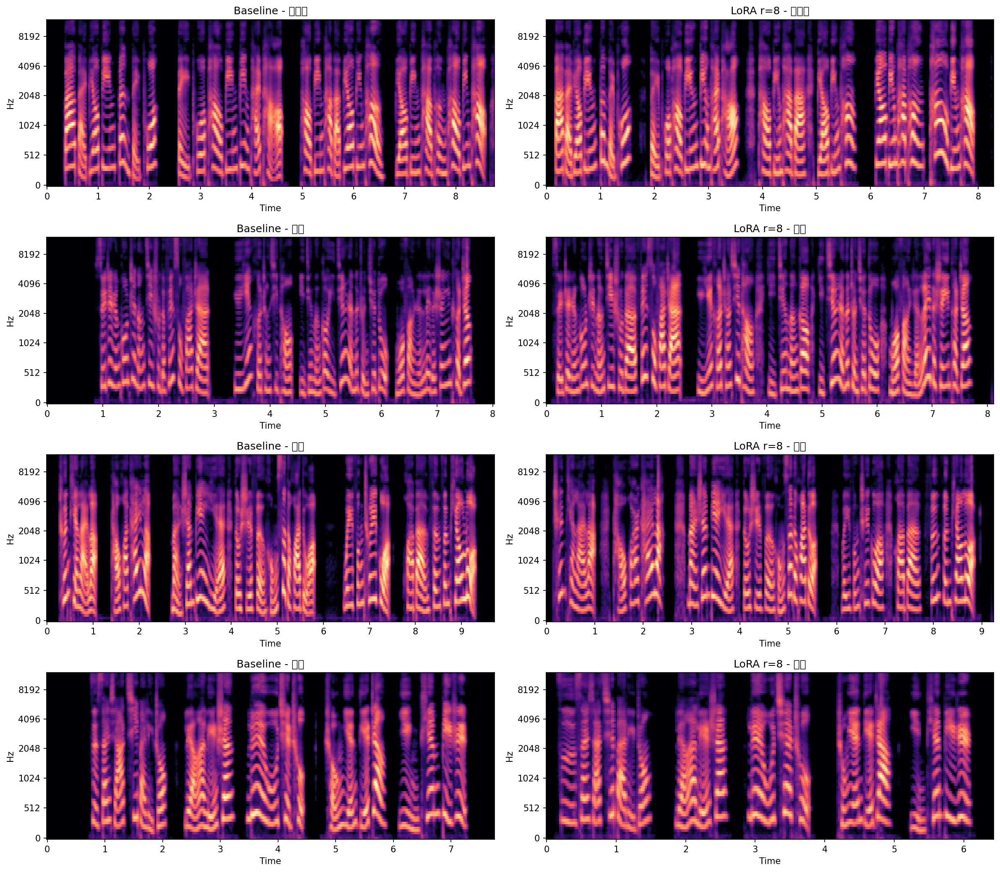

Run date: 2026-05-26 ~ 2026-05-28 | GPU: RTX 4090 24GB | Model: Fun-CosyVoice3-0.5B
同一参考音频 (zero_shot_prompt.wav, 女声)，四组不同文本。每组同时听 Baseline vs LoRA rank=8。
| 样本 | MOS-NISQA (Base→LoRA) | SECS (Base→LoRA) | CER (Base→LoRA) | F0 RMSE (Base→LoRA) |
|---|---|---|---|---|
| 绕口令 | 3.975 → 4.119 +0.144 | 0.913 → 0.906 -0.007 | 0.188 → 0.250 +0.062 | 104 → 70 -34 Hz |
| 新闻 | 3.964 → 4.053 +0.089 | 0.956 → 0.946 -0.010 | 0.049 → 0.024 -0.025 | 120 → 78 -42 Hz |
| 散文 | 3.727 → 4.003 +0.276 | 0.964 → 0.967 +0.003 | 0.114 → 0.114 0 | 76 → 71 -5 Hz |
| 古文 | 4.432 → 4.205 -0.227 | 0.948 → 0.962 +0.014 | 0.286 → 0.357 +0.071 | 89 → 77 -12 Hz |
| 均值 | 4.024 → 4.095 +0.071 | 0.945 → 0.945 0.000 | 0.159 → 0.187 +0.028 | 97 → 74 -23 Hz |
| Rank | 可训练参数 | 最终 Loss | Loss 降幅 |
|---|---|---|---|
| 8 | 1.08M (0.21%) | 0.737 | -79.7% |
| 16 | 2.16M (0.43%) | 0.751 | -79.5% |
| 32 | 4.32M (0.85%) | 0.769 | -79.3% |
Mel spectrogram: Baseline (左) vs LoRA rank=8 (右)

Generated 2026-05-28 · voice_story project · CosyVoice 3 LoRA Ablation Report